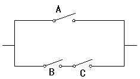
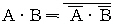
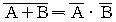
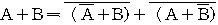
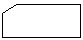
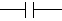
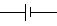
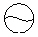
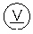
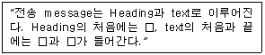

정보기기운용기능사 (2001-10-14 기출문제)
1과목: 전산 기초 이론
1. 다음 중 디지털량은?
- 연필의 개수
- 온도의 변화
- 시간의 흐름
- 식물의 성장
(정답률: 69%)

2. 다음 기억장치 중에서 데이터의 처리속도가 가장 빠른 것은?
- 자기 디스크
- 자기 코어
- 자기 테이프
- 자기 드럼
(정답률: 56%)
3. 전자계산기의 장치 중 주기억장치에 기억된 프로그램을 차례로 읽어 그 내용을 해독하고, 해독된 의미에 따라 필요 장치에 신호를 보내어 작동시키며, 그 결과를 검사하는 역할을 하는 장치는?
- 제어 장치
- 주기억 장치
- 연산 장치
- 보조 기억 장치
(정답률: 62%)
4. 십진수 9를 2진수로 변환하면?
- 1001
- 1010
- 0111
- 1011
(정답률: 82%)
5. 다음 스위칭 회로(switching circuit)를 논리식으로 표현한 것은?

- A(B + C)
- A + BC
- ABC
- A + B + C
(정답률: 69%)
6. 드모르강(De Morgans)의 정리에 해당되는 식은?



(정답률: 82%)
7. 오퍼레이팅 시스템(operating system)에서 제어 프로그램에 해당되지 않는 것은?
- 감시 프로그램
- 언어 번역 프로그램
- 데이터 관리 프로그램
- 작업 관리 프로그램
(정답률: 81%)
8. 명령어로서 니모닉 코드(mnemonic code)를 사용하는 프로그램 언어는?
- 기계어(Machine Language)
- 코볼(Cobol)
- 어셈블리어(Assembly Language)
- 포트란(Fortran)
(정답률: 66%)
9. 다음의 기억장치중에서 순차적(SEQUENTIAL) 호출로만 쓸 수 있는 장치는?
- 자기드럼(Magnetic Drum)장치
- 자기 디스크(Magnetic Disk)장치
- 데이터 셀(Date Cell)
- 자기 테이프(Magnetic Tape)장치
(정답률: 75%)
10. 다음 순서도 기호 중 비교·판단 기호는?

(정답률: 91%)
2과목: 정보 기기 운용
11. 도체에 5[A]의 전류가 1분간 흘렀다. 이때 도체를 통과한 전기량은 얼마인가?
- 30[C]
- 50[C]
- 300[C]
- 5[C]
(정답률: 82%)
12. 팩시밀리의 통신방식중 기능별 구성 요소와 관계 없는 것은?
- 주사의 조건
- 동기유지의 조건
- 자동송신기의 조건
- 광전변환의 조건
(정답률: 52%)
13. 다음 출력 방법 중 충격식 프린터(Impact printer)에 속하는 것은?
- 데이지 휠 프린터
- 잉크 젯 프린터
- 레이저 프린터
- 열전사 프린터
(정답률: 81%)
14. 정보에 대응해서 변조된 레이저빔을 이용하여 매체면 위에 기록하고, 재생시에는 기록시보다 약한 레이저빔을 조사해서 정보를 읽어내는 장치는?
- 자기디스크 장치
- 마이크로필름 장치
- 광 디스크 장치
- 비디오 자기파일 장치
(정답률: 68%)
15. 비디오 텍스에서 도형 및 숫자등을 구성하는 방식이 아닌 것은?
- 반 이중 방식
- 모자이크 방식
- 지오 메트릭 방식
- 포토 그래픽 방식
(정답률: 72%)
16. 다음 중 콘덴서의 기호는?




(정답률: 73%)
17. 다음 중 출력 장치가 될 수 있는 것은?
- 라이트 펜
- 디지타이저
- CRT 장치
- 바코드 판독기
(정답률: 70%)
18. 다음 중 전자계산기실의 조명 기준으로 가장 적합한 룩스(Lux)는?
- 500
- 50
- 2000
- 1000
(정답률: 84%)
19. 다음 중 다이얼의 3요소가 아닌 것은?
- 메이크 욜
- 시간 조절기
- 임펄스 속도
- 최소휴지시간
(정답률: 59%)
20. 디지털 신호와 아날로그 신호를 서로 변환하는 장치는?
- 단말기
- 전화기
- 모뎀
- 중앙제어기
(정답률: 88%)
21. 200[V]를 가하여 10[A]가 흐르는 직류전동기를 2시간동안 사용할 때 전력량은 얼마인가?
- 2 [KWh]
- 5 [KWh]
- 4 [KWh]
- 8 [KWh]
(정답률: 60%)
22. 텔레텍스트(teletext)의 기본 기능이 아닌 것은?
- 프로그램 송출기능
- 취재정보 수집기능
- 화상정보 전송
- 신호 전송기능
(정답률: 49%)
23. 1[Ω]의 저항 10개를 직렬접속했을 때의 합성저항을 병렬접속했을 때와 비교하면?
- 직렬로 접속하면 저항은 100배 작다.
- 직렬로 접속하면 저항은 10배 작다.
- 직렬로 접속하면 저항은 10배 크다.
- 직렬로 접속하면 저항은 100배 크다.
(정답률: 52%)
24. 마이크로 소프트사의 엑셀에만 걸리는 전용 바이러스는?
- 전갈 바이러스
- 매크로 바이러스
- CIH 바이러스
- 예루살렘 바이러스
(정답률: 77%)
25. 정보기기 관련 시설에 대한 화재 발생시 사용할 수 있는 소화기로 가장 적당한 것은?
- 프레온 가스소화기
- 스프링쿨러
- 이산화탄소 소화기
- ABC 분말소화기
(정답률: 89%)
26. 바이러스의 예방책으로 볼 수 없는 것은?
- 부팅용 디스켓은 반드시 write protect(쓰기 금지)를 시킨다.
- 부팅과 동시에 메모리 상주용 바이러스감시 프로그램을 실행한다.
- 무료 프로그램은 가능한 여러가지 백신프로그램으로 사전 검사후 사용한다.
- 중요 프로그램이나 자료는 하드디스크에 보관한다.
(정답률: 68%)
27. 전지(cell)의 종류는 크게 1차 전지와 2차 전지로 나눌 수 있다. 1차 전지와 2차 전지를 구분하는 가장 큰 특징은 무엇인가?
- 전지의 크기
- 전지의 연결 방법
- 전지의 재사용 여부
- 축전지의 저장 용량
(정답률: 86%)
28. 컴퓨터 바이러스의 감염 경로로 올바르지 않은 것은?
- 인터넷 등에 의한 전파
- 살아있는 생물처럼 공기로도 감염
- 프로그램 불법 복사
- 다수의 사람이 공용으로 사용할 경우
(정답률: 93%)
29. 송화기로부터 전송된 전기 신호를 본래의 음성으로 복원시켜주는 장치는?
- 송화기
- 수화기
- 패킷 교환기
- 음성 변복조기
(정답률: 67%)
30. 자기 잉크를 사용하여 문자를 나타내는 방법으로 은행의 수표 처리 등에 널리 이용되는 입력 매체는?
- BAR CODE
- OMR
- OCR
- MICR
(정답률: 74%)
3과목: 정보 통신 일반
31. 데이터통신의 특징으로 적합하지 않은 것은?
- 시간이나 회수에 관계없이 같은 내용을 반복하여 전송할 수 있다.
- 시스템의 신뢰도가 높다.
- 광대역 전송이 곤란하다.
- 고도의 에러제어방식이 요구된다.
(정답률: 76%)
32. PCM 통신방식의 장점이 아닌 것은?
- 잡음에 강하다.
- 누화에 강하다.
- 전송 레벨 변동이 없다.
- 점유 주파수 대폭이 크다.
(정답률: 48%)
33. ITU-1 X 시리즈 권고안 중 공중데이터 네트워크에서 패킷형 터미널을 위한 DCE 사이의 접속 규격은?
- X.3
- X.40
- X.21
- X.25
(정답률: 76%)
34. 데이터통신의 교환방식으로 분류할 때 해당되지 않는 것은?
- 메시지교환방식
- 패킷교환방식
- 메모리교환방식
- 회선교환방식
(정답률: 71%)
35. 다음 문장의 빈칸 안에 적합한 용어는?

- SOH, STX, ETX
- SOH, ETX, ETB
- ACK, ETX, EOT
- ENQ, ACK, NAK
(정답률: 59%)
36. 다음 중 유선계 뉴미디어로 보기에 거리가 먼 것은?
- 비디오텍스
- 문자다중방송
- 전자우편
- CATV
(정답률: 51%)
37. 데이터통신에 이용되는 단말기(Terminal)의 종류에 속하지 않는 것은?
- 비디오 CRT(Video CRT) 단말기
- 텔리프린터(Tele Printer) 단말기
- AM/FM 라디오(Radio) 단말기
- RJE(Remote job entry) 단말기
(정답률: 54%)
38. 정보가 사회의 중요한 자원이 되며 중요한 활동으로 평가되는 사회는?
- 산업사회
- 농경사회
- 정보사회
- 공업사회
(정답률: 92%)
39. 다음 중 가장 최초로 쓰여진 통신선로로서 전주에 가설하여 이용했던 것은?
- 광통신케이블
- 가공 나선
- PE 국내케이블
- 동축케이블
(정답률: 59%)
40. 정보가 축적된 데이터베이스로부터 TV 수신기와 전화의 연결에 의한 정보서비스로 전화선을 이용하여 각종 정보검색을 할 수 있는 화상정보시스템은?
- 근거리지역통신망(LAN)
- 텔리텍스트(Teletext)
- 비디오텍스(Videotex)
- 유선종합방송(CATV)
(정답률: 64%)
41. 통신속도 보오[baud]에 관한 설명으로 맞는 것은?
- 1초간 수신한 정지 펄스의 비
- 1분간의 송신 자수
- 1초간 송출한 최단 펄스의 비
- 1초간의 송신 자수
(정답률: 67%)
42. 음의 재생과정에서 전화기의 수화값에 있는 진동판의 진동폭이 커지면 감도는?
- 일정하다
- 낮아진다.
- 주기적으로 변한다
- 높아진다.
(정답률: 46%)
43. 다음 중 디지털 동화상을 압축하는 기술기법은?
- MPEG
- Hypertext
- FPLMTS
- PCS
(정답률: 85%)
44. LAN의 특징과는 거리가 먼 것은?
- 정보처리기기의 재배치 및 확장성이 뛰어나다.
- 경로 선택이 필요하다.
- 광대역 전송매체의 사용으로 고속통신이 가능하다.
- 종합적인 정보전송이 가능하다.
(정답률: 53%)
45. 데이터통신의 이용형태 중 생활정보와 밀접하지 않은 것은?
- 거래처리(Transaction Processing)
- 질의응답(Inqulry/Response)
- 공정제어(Process Control)
- 원격처리(Remote Processing)
(정답률: 49%)
46. 다음 중 4선식회선이 필요한 전송방식은?
- 전이중통신
- 단향통신
- 반이중통신
- 이동통신
(정답률: 83%)
47. 광케이블의 기본적인 구조는?
- 유리관과 폼스킨
- 코어와 글래딩
- 철선과 고무절연물
- 동선과 PE피복
(정답률: 81%)
48. 모든 정보가 적어도 두 번은 전송되어야 하는 방식은?
- 루프 혹은 에코우 검사
- 에러의 무시
- 검출후 재전송
- 전진에러수정
(정답률: 37%)
49. RS-232 C 25 Pin 컨넥터의 송신(TXD)과 수신(RXD)의 핀번호는?
- 7, 8
- 15, 16
- 20, 22
- 2, 3
(정답률: 82%)
50. 통신시스템을 구성하는 다음 요소들 중 일반적으로 고장 발생률(에러율)이 가장 낮은 것은?
- 입·출력 장치
- 통신회선
- 중앙처리장치
- 운용자
(정답률: 50%)
4과목: 정보 통신 업무 규정
51. 다음 전기통신의 관장에 대한 설명 중 적합하지 않은 것은?
- 우리나라의 모든 전기통신에 관한 사항은 정보통신부장관이 관장한다.
- 전기통신에 관한 정부시책은 정보통신부장관이 마련한다.
- 다른 법률의 특별한 규정을 제외하고는 전기통신기본법에 근거를 둔다.
- 통신행정의 주관청은 정보통신장관이다.
(정답률: 60%)
52. 전기통신기본법의 제정 목적에 벗어나는 것은?
- 전기통신의 효율적관리
- 이용자의 편의도모
- 전기통신의 발전촉진
- 공공복리의 증진
(정답률: 52%)
53. 통신사업자가 통신역무 제공시 의무원칙에 관한 사항으로 볼 수 없는 것은?
- 정당한 사유없이 역무제공을 거부하여서는 아니된다.
- 요금은 그 역무를 공평, 저렴하게 받을 수 있도록 결정되어야 한다.
- 역무의 제공시 국가의 보위 및 안보에 관한 통신보안 규제를 홍보하도록 한다.
- 업무처리시 공정, 신속, 정확을 기하여야 한다.
(정답률: 68%)
54. 정보통신서비스 제공자의 준수사항으로 적절하지 않은 것은?
- 국가의 경제발전에 유해가 되는 행위를 하여서는 아니된다.
- 수신자의 의사에 반하여 영리목적의 광고성 정보를 전송하여도 무방하다.
- 공공의 미풍양속을 해치는 행위를 하여서는 아니된다.
- 국가의 안전을 위태롭게 하는 행위를 하여서는 아니된다.
(정답률: 83%)
55. 전기통신사업자가 아닌 것은?
- 일반통신사업자
- 기간통신사업자
- 부가통신사업자
- 별정통신사업자
(정답률: 82%)
56. 통신회선의 신뢰성에 관한 사항 중 정상 열화 요인이 아닌 것은?
- 위상 지터
- 군지연 왜곡
- 랜덤 잡음
- 펄스성 잡음
(정답률: 41%)
57. 다음 설명 중 틀린 것은?
- 절대레벨 단위는 dBm이다.
- 고주파라 함은 3400Hz 미만의 주파수를 말한다.
- 저주파라 함은 300Hz 미만의 주파수를 말한다.
- 음성주파수라 함은 300Hz 이상 3400Hz 이하의 주파수를 말한다.
(정답률: 65%)
58. 기간통신사업자 및 부가통신사업자의 교환설비로부터 이용자 전기통신설비의 최초 단자에 이르기까지의 사이에 구성되는 회선을 무엇이라 하는가?
- 국선
- 구내선
- 중계선
- 가입자선
(정답률: 69%)
59. 전기통신장비의 형식승인 유효기간은 몇 년인가?
- 7년
- 5년
- 3년
- 10년
(정답률: 57%)
60. 다음 중 전자문서의 도달시기로 옳은 것은?
- 발신자의 컴퓨터 파일에 전자문서가 기록된 때
- 발신자가 전자문서를 작성한 때
- 수신자 컴퓨터의 전자문서를 읽은 때
- 수신자의 컴퓨터 파일에 전자문서가 기록된 때
(정답률: 62%)